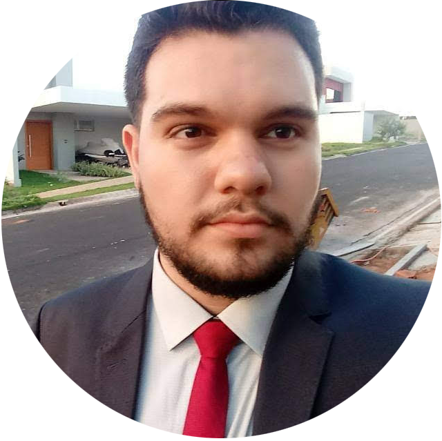

JOAO PAULO
THEODORO SAMPAIO
23 anos, Desenvolvedor back-end apaixonado
portecnologia
e inovação, distraído, rei da
piada fora de hora e melhorando
a cada dia. Acredito muito no profissionalismo e na boa
convivência no ambiente de trabalho, considero minha
persistência e busca por inovação minhas maiores qualidades,
porém sinto que a falta de liderança, e de pulso firme são os
meus maiores defeitos, sou do tipo que tem dificuldade em dizer
não, porém e sinto empolgado e extramente otimista sobre o futuro,
principalmente na TCS.
Objetivos
Posso dizer que hoje mais do que nunca tenho meus objetivos,
em mente, bom primeiro e mais óbvio é terminar minha gradução de
ciência da computação (agora em 2022), tenho em mente também me
um nalista juniior da tata e depois me especializar em um linguagem
ou tecnologia, pois um dos objetivos também é fazer uma pós
gradução, tenho facilidade com as linguagems usadas em back-end
e por conta disso almejo e me dedicarei a ser um ótimo programador
back-end um dia. E claro que o maior objetivo é construir uma carreira
na TCS.